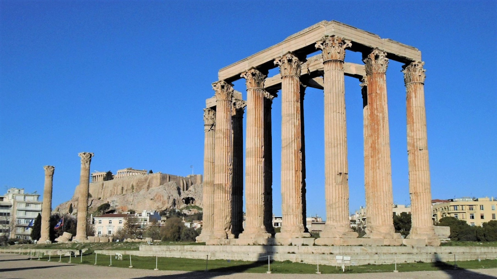
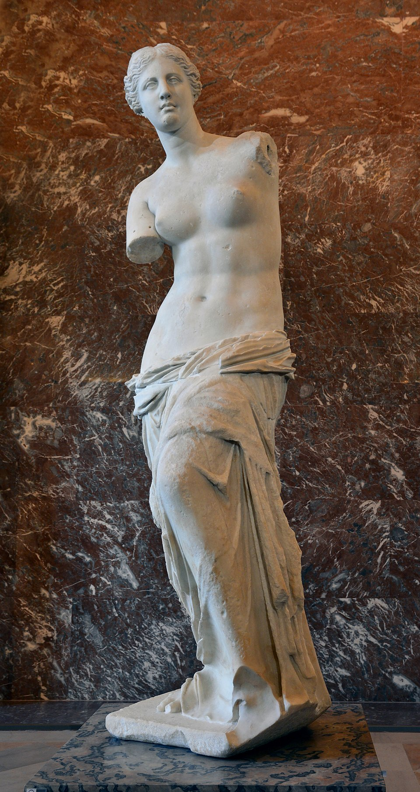

Templo de Zeus Olímpico (Atenas)
Um dos maiores templos da Grécia, iniciado por Pisístrato e concluído pelo imperador romano Adriano no século II d.C.
Templo de Apolo (Delfos)

Local do famoso Oráculo de Delfos, era considerado o centro do mundo pelos antigos gregos.
Estátua de Zeus em Olímpia

Uma das Sete Maravilhas do Mundo Antigo, criada por Fídias, representava Zeus sentado em um trono ornamentado.
Discóbolo de Míron

Escultura que captura o momento do lançamento do disco, simbolizando o ideal de movimento e equilíbrio da arte grega clássica.
Vênus de Milo
Representa Afrodite, deusa do amor e da beleza. Esculpida no período helenístico, destaca-se pela ausência dos braços e pela expressão serena.